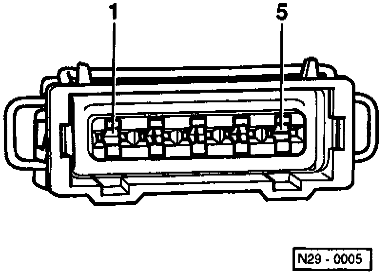
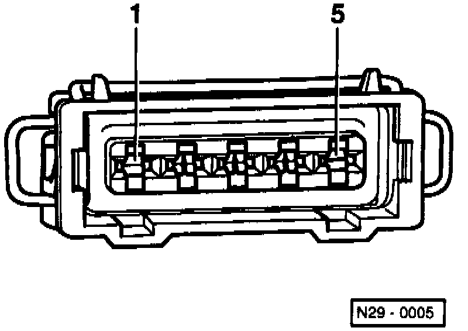
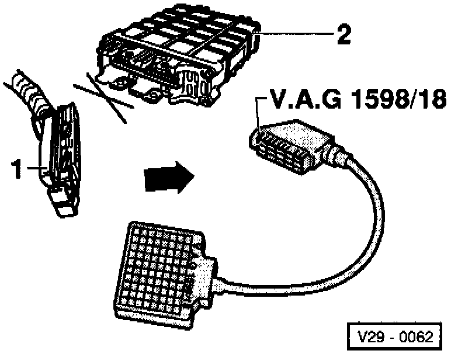

Ignition Coil: Testing and Inspection
Special tools, testers and auxiliary items:- Multimeter (Fluke 83 or equivalent).
- VAG 1527B voltage tester.
- Connector test kit VW 1594.
Test sequence:

- Disconnect ignition wires at ignition coil and remove wire guide -2-.
Checking voltage supply:

- Disconnect 5-pin connector at ignition coil -N152- (arrow).

- Connect multimeter using test leads from VW 1594 to measure voltage at connector terminals 1 and 5.
- Switch ignition on.
- Measure voltage between terminals 1 and 5.
Specification: 9-14.5 volts.
- Switch ignition off.
If the specification is not attained:

- Check wiring between 5-pin connector terminal 1 and Ground (GND) according to wiring diagram.
Resistance max. 1.5 ohms
- Check wiring between 5-pin connector terminal 5 and relay panel for open circuit according to wiring diagram.
Resistance: max. 1.5 ohms.
Checking activation
- Remove fuse 18.
WARNING: During the following test do not touch the terminals of the ignition coil or test leads.
- Switch ignition off.

- Connect VAG 1527B voltage tester with test leads from VW 1594 to terminals of disconnected 5-pin connector.
- Terminals 5 and 2 (ignition output 1).
- Terminals 5 and 3 (ignition output 3).
- Terminals 5 and 4 (ignition output 2).
- Operate starter and check ignition signal from Engine Control Module (ECM).
- LED must flicker.
- Switch ignition off.
If the LED does NOT flicker:
- Replace ECM -J220-.
If LED flickers:

- Connect VAG 1598/18 test box to ECM wiring harness (arrow).
- Check wiring between test box and 5-pin connector for open circuit according to wiring diagram.
- Terminal 2 and test box test box socket 8.
- Terminal 3 and test box test box socket 60.
- Terminal 4 and test box test box socket 52.
Resistance: max. 1.5 ohms.

- Additionally check wiring for short to one another.
- Terminal 2 and test box test box socket 60.
- Terminal 2 and test box test box socket 52.
- Terminal 3 and test box test box socket 52.
Specification: infinite ohms.
If no wiring malfunction is detected and voltage was present between terminals 1 and 5:
- Replace ignition coil -N152-.